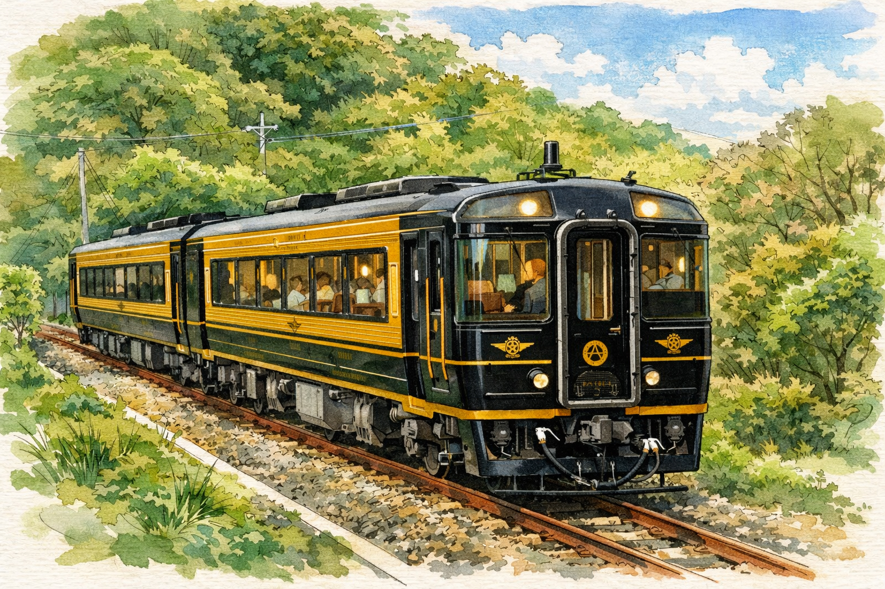
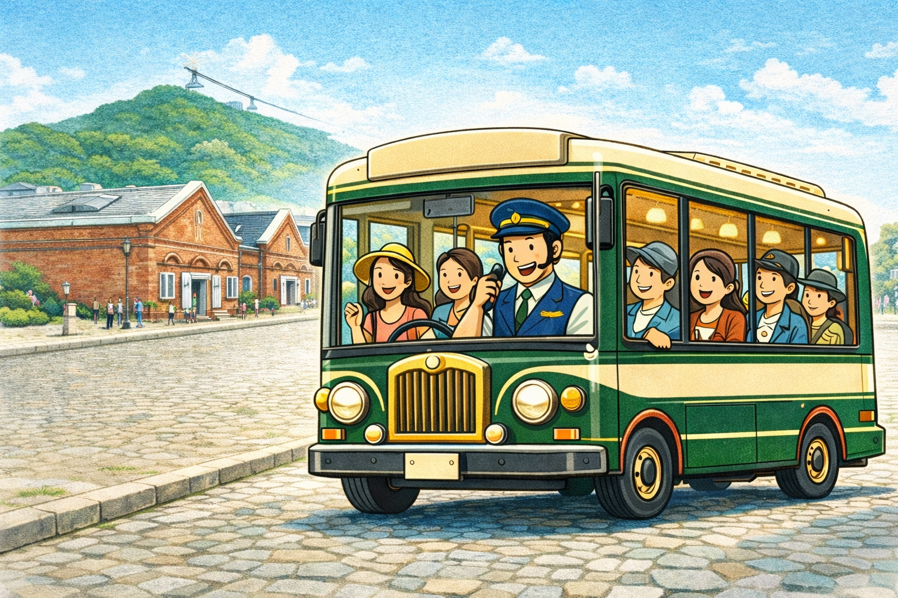

Project 04
Experience Liner
新函館北斗〜函館の18分を、
「乗りたくて選ばれる電車」に変える。

Fig. — Experience Liner コンセプト。既存車両を再活用した2両編成。地元の技術で磨き上げる体験型ライナー
Experience Liner は、
新函館北斗と函館をつなぐだけの電車ではありません。
新幹線で高まった期待感をそのまま函館へ運び、
到着前から旅の気分を完成させる
2両編成・全席指定の体験型ライナーです。
高価な新造車両ではなく、
既存の電車車両を活かし、地元の知恵と技術で磨き上げる再生型の電車。
18分という短さは、不利ではありません。
むしろ、過不足なく体験を凝縮できる長さであり、
設計の丁寧さ次第で
「函館観光の最初のハイライト」にできます。
Why This Matters
なぜ体験型電車なのか
新函館北斗〜函館の18分は、
現在「移動のつなぎ」として消費されている。
新幹線を降りた乗客はふつうの電車に乗り換え、
車窓の風景に特段の演出もなく函館駅に到着する。
東京から4時間かけて高まった期待感が、
最後の18分で平坦に戻されている。
観光戦略において、
この18分は、函館が旅行者に与える最初の印象を決める時間です。
輸送効率だけを追えば、
この区間はただのシャトルになる。
しかし体験型電車として設計すれば、
到着前の期待感を最高潮まで引き上げる装置に変わる。
JR九州「A列車で行こう」は、
三角線の約40分を
上質な空間、バーカウンター、ジャズの演出で
移動そのものを目的化した。
長い観光車両でなくても成立する。
むしろ短距離だからこそ、
体験を凝縮し、仕立ての質を高め、限定感を持たせることで、
「乗りたくて選ばれる電車」をつくれます。
それも、高額な新造車両ではなく、
既存車両の再活用と地元技術者の工夫で実現できる規模です。
函館に必要なのは、
最短で着く電車だけではありません。
新幹線で高まった期待感を、
ふつうの乗り換えで冷ましてしまわないことです。
2-Car Design
18分を変える2両編成
Experience Liner は、既存の電車車両を再活用した2両編成で構成する。
新造ではなく再生だからこそ、
1両ごとの設計に集中でき、体験密度を高められる。
乗客は車両間を自由に行き来しながら、
18分間を自分のスタイルで過ごすことができる。
1号車：ラウンジ＆プレミアムシート車
1号車は、単に座るための車両ではなく、 新幹線から函館観光へ気分を切り替える導入空間である。
既存車両の座席を2列×2列の指定席に再配置し、
落ち着いた照明と木目基調の内装で
乗車直後に旅の気分を切り替える。
車両端部には小型ラウンジスペースを設け、
函館の地酒、菓子、軽食に触れられる販売機能を持たせる。
到着前から函館の消費体験が始まる車両である。
18分だからこそ、メニューは重すぎず、
片手で楽しめる軽食や一口サイズの地元菓子に絞る。
短い時間でも「特別な電車に乗っている」という
実感を与えられるかどうかは、空間の質で決まる。
2号車：ボックス＆ストーリー体験車
2号車は、家族・友人・小グループで 函館到着前の時間を共有できる体験車両である。
2〜4人向けのボックス席に大きめのテーブルを配し、 車内ガイドやストーリー演出を囲みながら楽しめる構成とする。 既存車両の骨格を活かした再設計により、 窓からの視線の抜けを最大限に確保し、 照明、素材、座席配置で到着前の高揚感をつくる。
ボックス席は会話を自然に生む配置であり、
音声ガイドの函館ストーリーが
グループの話題に変わる仕掛けとして機能する。
18分という短い時間だからこそ、
設備の過剰さではなく印象設計が重要になる。
丁寧な仕立てと演出の密度で、記憶に残る到着体験をつくる。
Design Philosophy
地元の知恵で磨き上げる電車
Experience Liner は、高価な新造車両を目指す構想ではありません。
既存の電車車両を活かし、函館市民と地元技術者の工夫で、
できるだけ安く、しかし上質に磨き上げる——その再生の物語自体が、この電車の価値になります。
座席の張り替え、照明の設計、木材の選定、音声演出の制作。
どれも大規模な設備投資ではなく、
設計と仕立ての丁寧さで勝負できる領域です。
地域の家具職人、デザイナー、音響技術者が参加することで、
「函館が自分たちの手でつくった電車」という物語が生まれます。
新造車両は1両あたり数億円規模の投資が必要になる。 一方、既存車両の再活用であれば、 内装改修と演出設備に集中投資でき、 コストを大幅に抑えながら体験品質を確保できる。
設備の派手さではなく、仕立ての良さで魅せる。
短距離だからこそ濃密に、既存資産を高付加価値化する。
それが Experience Liner の設計思想です。
Experience Design
体験の設計
18分は短い。だからこそ、
乗車から降車までのすべての時間に意味を持たせる。
Experience Liner の体験は4つの要素で構成される。
上質な座席空間
乗った瞬間に「ふつうの電車ではない」と伝わる空間品質。
木目、暖色照明、ゆとりあるシートピッチ。
18分だからこそ、第一印象がすべてを決める。
乗車直後の3秒で旅の気分が切り替わる空間をつくる。
小型ラウンジと地元物販
函館の地酒、クラフトビール、地元菓子を車内で提供する。
短い乗車時間に合わせて、
一口サイズ、片手で楽しめる軽食に絞ることで、
「少しだけ贅沢」を気軽に体験できる。
車内で出会った味が、到着後の店選びにつながる。
車内ガイド演出
音声と車窓映像で函館の歴史・食・文化の概要に触れる。
縄文、開港、港町、夜景。
18分だからこそ情報は詰め込まず、
印象的な導入に絞る。
「函館に来た」という実感と、
「到着後にどこへ行くか」の期待感を同時につくる。
窓景演出と記憶に残る到着
特別な展望室がなくても、到着体験は設計できる。
函館湾、函館山、街並みが車窓に見え始める瞬間を、
座席配置、照明の変化、到着前アナウンスで丁寧に演出する。
重要なのは派手な設備ではなく、
「函館に着く期待感」を最大化すること。
降車時には周遊ルートとクーポン情報を案内し、
降りた瞬間から消費行動が始まる状態をつくる。
18-min Timeline
18分の体験タイムライン
18分をここまで設計できる。
乗車から降車まで、すべての時間に役割がある。
導入
接触
物語・高揚
到着
0–3 min：車内導入・音声演出
乗車と同時に車内照明が暖色に切り替わり、
函館をイメージした音声演出が始まる。
乗客は「移動」ではなく「体験が始まった」と認識する。
最初の3分で、ふつうの電車とは別の時間に入る。
3–7 min：地酒・菓子・物販接触
ラウンジスペースで函館の地酒、菓子、軽食に触れる。
車内限定メニューが「この電車でしか味わえない」
という限定感を生む。
7分目までに、函館の味の予告編が完成する。
7–12 min：函館の歴史・港町ストーリー
音声ガイドと車窓映像が函館の全体像を伝える。
縄文遺跡、開港の歴史、朝市、夜景、五稜郭。
5分間で函館の奥行きを知り、
「到着後にどこへ行くか」の判断材料が揃う。
12–15 min：到着前アナウンス・期待感ピーク
窓の向こうに函館湾と函館山のシルエットが見え始める。
車内照明がゆるやかに変化し、到着前の音声演出が期待感をピークに引き上げる。
おすすめ周遊ルートとHakodate Loopバスの案内が流れ、
設備の新設ではなく、時間設計と見せ方で18分のクライマックスをつくる。
15–18 min：函館駅到着
降車時にクーポン付き観光マップが手渡される。
乗客はすでに函館の食・歴史・文化の概要を知り、
行きたい場所のイメージを持ち、
期待感が最高潮の状態で街へ出る。
18分前とは別の旅行者になっている。
「18分しかない」ではなく「18分をここまで設計できる」。
体験タイムラインの本質は、
時間を埋めることではなく、
感情の曲線を管理することにある。
導入で非日常感を、中盤で知的好奇心を、 終盤で期待感のピークを。 この曲線があるからこそ、 降車後の消費行動が自然に始まる。
Perspective
速さより、乗りたさ
函館に必要なのは、
最短で着く電車だけではありません。
新幹線で高まった期待感を、
ふつうの乗り換えで冷ましてしまわないことです。
輸送効率だけを追えば、 この区間はただのシャトルになる。 しかし体験型電車として設計すれば、 18分は「消費される移動時間」ではなく 「価値を生む観光時間」に変わる。
Experience Liner が目指すべきなのは、
短い区間を我慢して乗る電車ではありません。
短い区間でも、わざわざ乗りたくなる電車です。
2両編成という規模は制約ではありません。 むしろ、すべての席に仕立ての良さが行き渡り、 すべての乗客がラウンジも窓景も体験できる距離感が、 大編成にはない親密さと濃密さを生む。 既存車両を地域の技術で磨き上げるからこそ、 函館らしい温かみのある電車になる。
この電車が実現すれば、 新函館北斗〜函館の18分は 「函館旅行で最初に語られる体験」になる。
Implementation
運行を支える基盤
Experience Liner の実現には、 既存車両の再活用設計に加えて、駅空間・交通連携・運行体制の基盤整備が必要になる。
新函館北斗駅のゲートウェイ化
新函館北斗駅を乗り換えの通過点から 「函館体験の入口」に再設計する。 ライナー専用の待合空間、物産プレビュー、 チケット窓口を集約し、 乗車前から体験が始まる導線をつくる。
函館駅到着後の導線
函館駅から港エリア・元町・朝市への歩行導線を再整備する。 サイン計画、多言語マップ、案内アプリとの連携で、 降車後の分散を防ぎ、消費エリアへ自然に誘導する。
交通事業者との連携
JR北海道の既存ダイヤに組み込む形で運行する。 函館バス、市電との統合チケットにより、 ライナー乗車券で市内交通が一定時間フリーになる仕組みを導入。 交通レイヤーから観光動線を一体化する。
全席指定・予約設計
乗車料金600円・全席指定制で、 新幹線予約と同時にライナー席を確保できる仕組みとする。 車内飲食・物販・クーポン連携による追加消費で 1乗車あたりの体験単価を高める。
Hakodate Loop
観光周遊バス構想
函館観光の課題は、観光資源が弱いことではなく、 強い拠点が点在していることです。
函館駅、金森倉庫、元町、函館山、五稜郭は
それぞれ魅力が高い一方で、
観光客にとっては移動が分断されやすく、
徒歩だけでは回りにくい。
そこで、主要観光地を循環する
無料または低額の観光周遊バスを導入する。
このバスは単なる移動手段ではなく、
車内ガイドや音声案内により、
乗車中そのものが観光体験になる設計とする。
これにより、観光客の移動負担を下げるだけでなく、
各拠点間の回遊を促進し、
「1か所見て終わり」ではない
連続的な観光行動を生み出すことができる。
参考事例：横浜市「あかいくつ」周遊バス—— 横浜の主要観光地（みなとみらい、中華街、赤レンガ倉庫、山下公園など）を循環する100円バス。 観光客の回遊性を高め、エリア間の消費連鎖を生み出している実例。 函館の都市構造と規模感に近く、Hakodate Loop構想の直接的な参考モデルとなる。

Fig. — 函館駅、金森倉庫、元町、函館山、五稜郭を結ぶ観光周遊バス構想。移動そのものを観光体験化し、回遊性と消費機会を高める。
Strategic Meaning
回遊交通の戦略的意味
この施策の本質は、交通サービスの追加ではなく、 函館観光を"点の観光"から"線と面の観光"へ変えることにある。
夜景、歴史、港、飲食を個別資源として並べるのではなく、
周遊交通によって一体化することで、
滞在時間と消費機会が増える。
特に、函館山の夜景鑑賞後に金森・元町・駅方面へ流す導線や、
日中の五稜郭訪問を他エリア消費へ接続する導線として有効である。
回遊性の創出
現在の観光客は1〜2拠点で行動が完結しやすい。
周遊バスにより「ついでにもう一か所」の行動を誘発し、
拠点あたりの消費を面的な消費へ拡張する。
施策間の接続基盤
Night Economy、Goryokaku 2.0、港エリア施策は
それぞれ異なるエリアに立地する。
周遊バスはこれらを横断的につなぐインフラとして、
都市全体を一つの観光回遊空間に変える装置になる。
函館の課題は、観光客が「来ない」ことではなく、 一度見た後の次の行動がつながりにくいことです。
周遊バスは、この分断を埋める最も分かりやすい装置であり、 都市全体を一つの観光施設のように機能させる基盤となる。